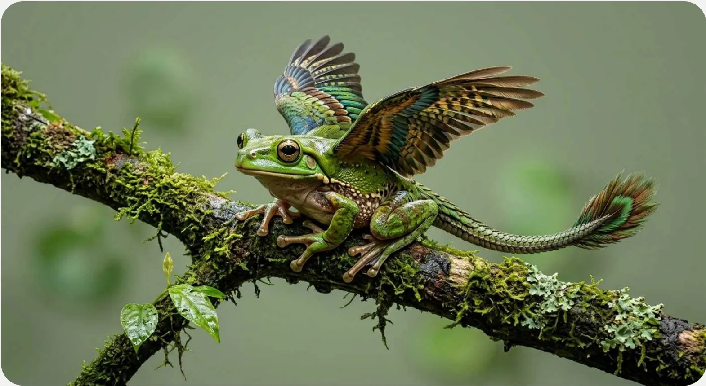
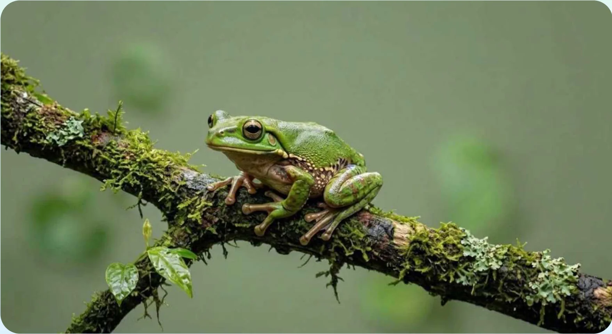

The design process needed to be faster. I found the two biggest slowdowns. Reading long briefs and putting together the same basic screens again and again. So I built an agent that does exactly that. Every design decision stays with a designer.
Per design task, brief to handoff. Measured.
Measured during real work, by me and a second designer: the same tasks, the usual way and with the agent. The 3 saved days went back to research and decisions.
Developers already worked with AI. Design was still by hand. Another designer would not fix that. Removing the routine work would.


The input: 20-page technical briefs and complex logistics logic. My first try was one perfect prompt. It gave generic screens, wrong components and invented colours, and every run looked different. So I stopped prompting and wrote rules the AI can follow: skill → index → rules → context. Same result every time.
Here's a simple scheme of how it works, and where the designer makes the decisions.
Swipe to see the whole flow →
What's inside: team rules, synthetic personas, and screen patterns for the mobile and web app. As part of the team, I picked the universal ones from screens we had already made.
Claude reads the rules. Two ways to build, the designer chooses: from the Figma library, or with the same design system in Artifacts. Artifacts is the better choice, because it can also make HTML prototypes. Figma stays the source of truth.
Every week, Claude checks the design system in Figma and updates it in Claude.
It lives in Git and a shared skill. Every session starts from the latest version, so the whole team always works with the same rules.
Schematic of a real session: the agent assembles an app concept section by section. In Figma or Artifacts.
It builds a first draft from the brief and the design system. A designer decides and finishes it.
Interviews become one persona that every designer tests with. Real users validate it, so the team understands their needs even when there is no time to visit them. It grows with every new interview.
Real user
Interviews
Synthetic persona
grows with every interview
Every designer has access to the persona in Claude.
For example: One team tests a feature and finds out it doesn't work. Another team can use the synthetic persona and save some time. It's especially useful in big teams, where you can connect knowledge from tools like Notion or Confluence and improve the first round of testing.
“Just tell me it's done, so I can go.”
Loads his own route on the ramp at 6 am. Often an external carrier. Uses the app every day, for a few minutes, for nothing else.
Impatient · afraid of a mistake he can't fix on the route · unsure while waiting for the coordinator
The checker agent starts when a draft is done, and any designer can run it alone. Nothing gets to a designer without a check, and nothing goes out without a designer.
Not a switch, a gradual change of how the team works. One new capability at a time, until it stopped being “the AI thing”.
“Wait, how is this so good?” The team, a month in.
No big switch. I watched what the team needed most: reading specs, prototyping, pre-built screens, personas for flows. Each one came as its own step, and the next one only when the previous one was part of the routine.
Without someone who owns the rules, the system falls apart. So before I leave, the team gets a manual for keeping it alive, and one designer takes over as the maintainer.
The agent keeps working only as long as a designer keeps it in shape.